顶栏状态平铺成同一权重
数据库、连接、事务、表数挤在一行；当前任务和操作对象缺少主次。
真实项目盘点 · 三种视觉方向 · 可点击高保真原型 · 落地顺序
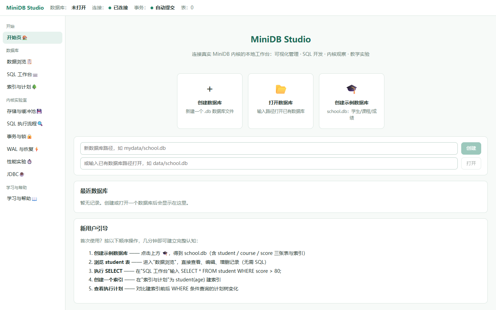
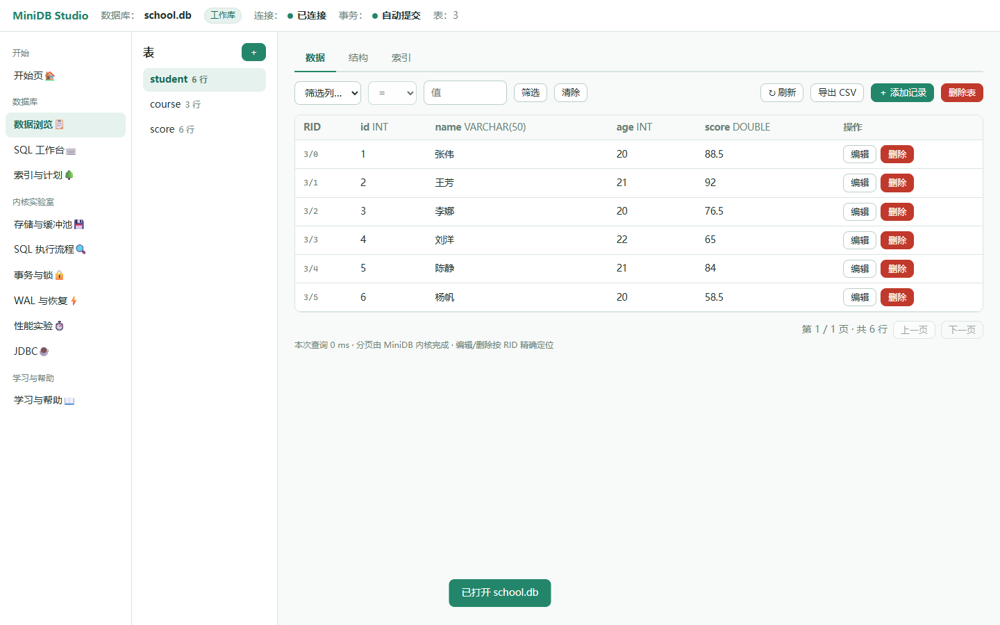
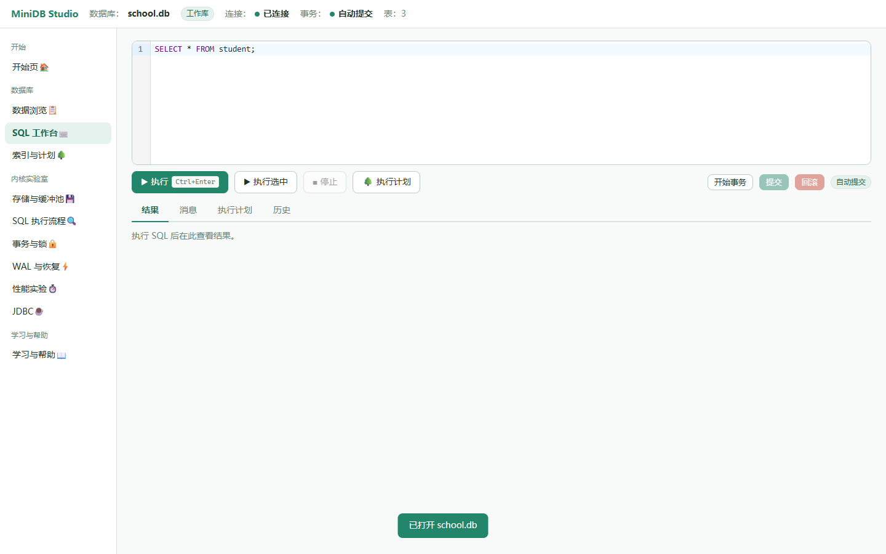
数据库、连接、事务、表数挤在一行；当前任务和操作对象缺少主次。
图标线宽、语义和对齐不一致；实验入口虽齐全，但分组层级偏弱。
输入框、快捷卡和新手引导重复解释，下一步仍需用户自行对应。
编辑器固定 200px；空结果区和页面留白较大，核心工作区比例失衡。
会话过期、迁移、错误虽有文案，但持续状态与局部反馈未形成系统。
页面依赖 card + inline style，工具栏、对象头和实验框架难以统一调整。
全局状态持续可见；应用功能用主导航；数据库和表用对象导航；说明与历史按任务出现。
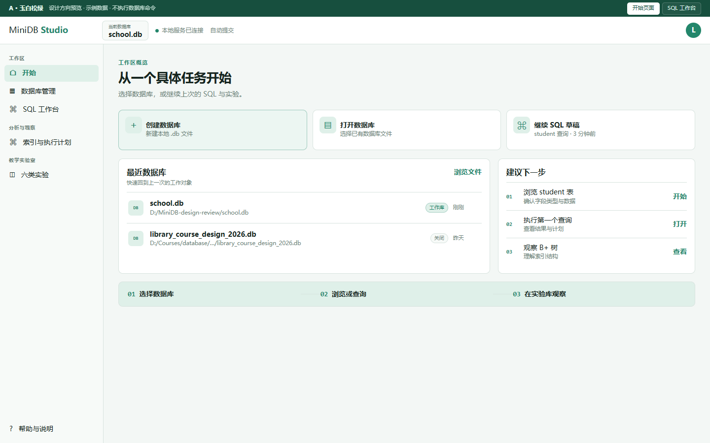
左侧分区导航；均衡信息密度；对象与任务边界清楚。适合长时间使用。
推荐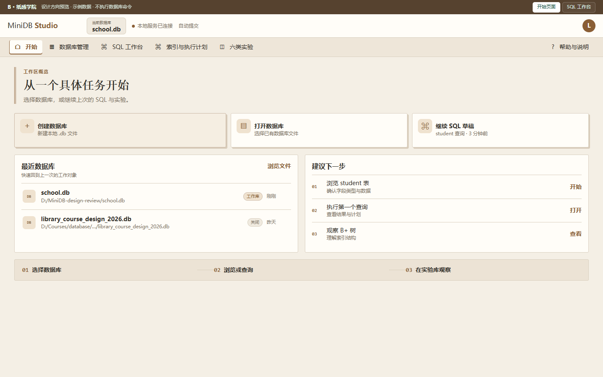
横向章节导航；纸面双栏；教学引导更强，但宽页面和高频切换成本略高。
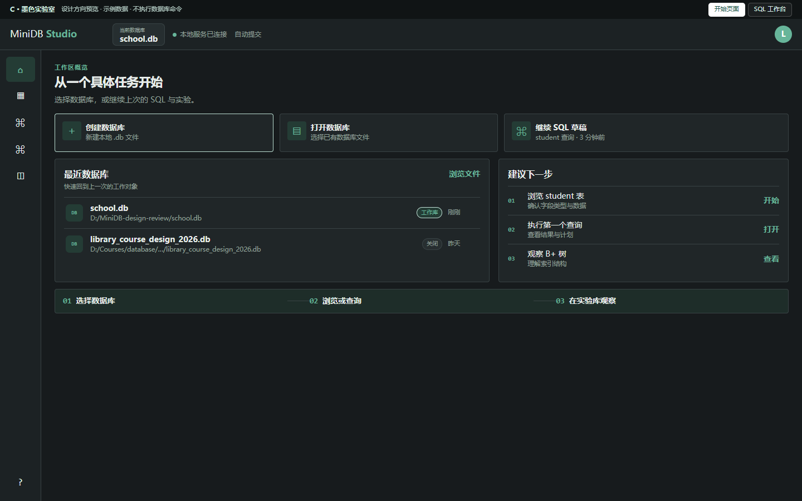
窄图标轨；高密度暗色工作台；SQL 聚焦，但新用户发现成本最高。
| 方向 | 精致程度 | 功能清晰度 | 长时舒适 | 实现成本 |
|---|---|---|---|---|
| A · 玉白松绿 | 4.7 / 5 | 4.8 / 5 | 4.8 / 5 | 低–中 |
| B · 纸感学院 | 4.4 / 5 | 4.2 / 5 | 4.3 / 5 | 中 |
| C · 墨色实验室 | 4.5 / 5 | 3.8 / 5 | 4.0 / 5 | 中–高 |
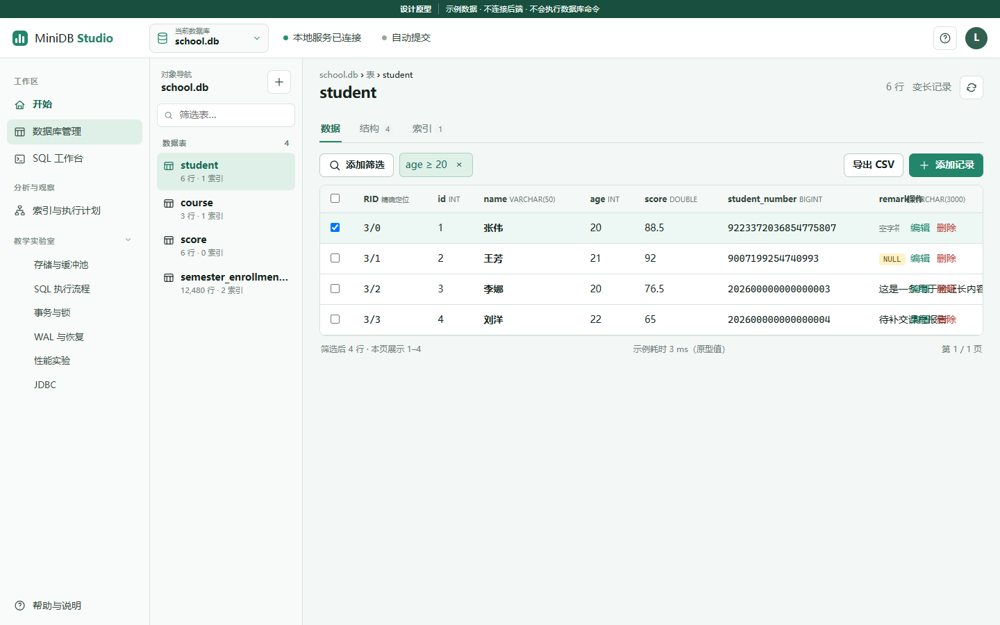
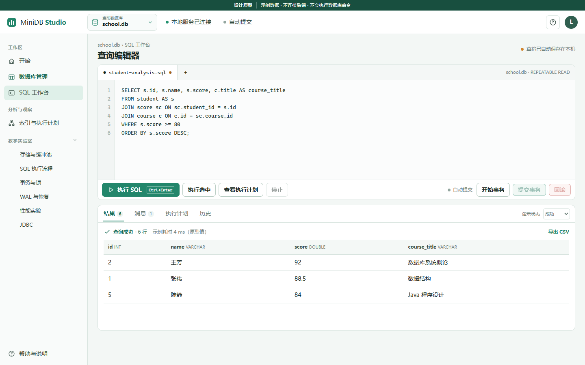
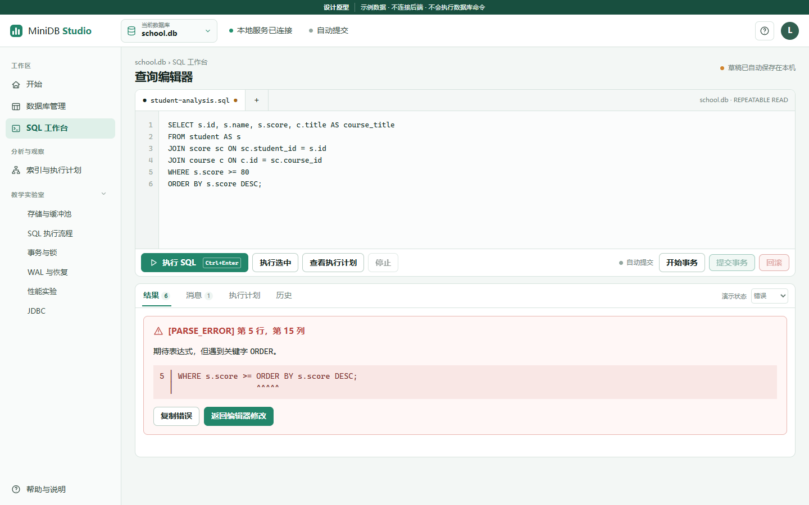
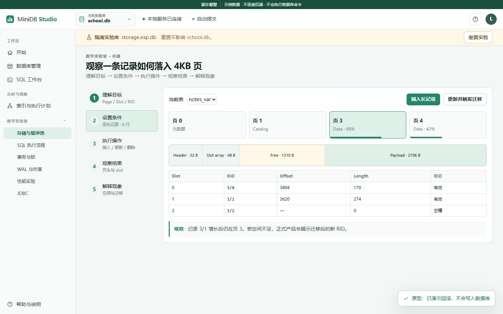
页地图、页内布局、slot 表和 RID 迁移解释围绕“记录落在哪”展开。
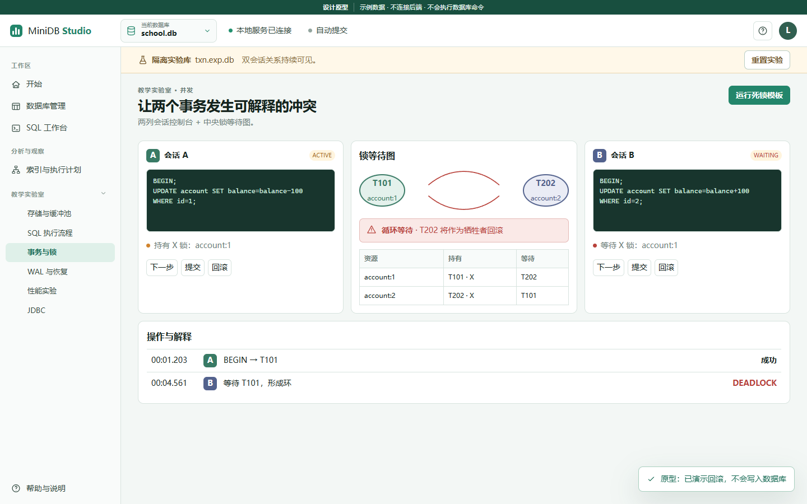
两列会话 + 中央等待图；锁、等待、死锁牺牲者和日志持续可见。
| 现有板块 | 当前入口 / 关键能力 | 新方案位置 | 保留方式 | 验证状态 |
|---|---|---|---|---|
| 开始页 | #/start · 创建 / 打开 / 最近 / 示例 / 引导 | 工作区 › 开始 | 任务入口 + 最近列表 + 下一步 | 源码 + 运行 |
| 数据库管理 | #/db · 数据 / 结构 / 索引 / RID CRUD | 工作区 › 数据库管理 | 对象树 + 三页签 + 宽表内滚动 | 源码 + 运行 |
| SQL 工作台 | #/sql · CodeMirror / 结果 / 计划 / 历史 / 事务 | 工作区 › SQL 工作台 | 编辑器与结果主导，五种状态 | 源码 + 运行 |
| 索引与计划 | #/index · CRUD / B+ 树 / Explain | 分析与观察 | 索引—节点—计划同一上下文 | 源码 + 原型 |
| 六类实验 | #/lab/* · 存储 / 流水线 / 事务 / 恢复 / 性能 / JDBC | 教学实验室（可展开） | 统一五步框架 + 不同观察器 | 源码 + 原型 |
| 帮助 | #/help · 架构 / 方言 / 文档 | 固定底部入口 | 上手 / 限制 / 错误 / 快捷键 | 源码 + 原型 |
把 tokens、顶栏、主导航、按钮、表格、状态样式集中到现有 styles.css 与 ui.tsx。
低风险 · 不改 API在 DatabasePage / SqlPage / IndexPlanPage 中引入对象头、持久状态和统一实验框架。
中风险 · 保留 CodeMirror仅在审批后补充停止执行、NULL 能力声明、实验目录一致性等接口；不改变 SQL 语义或文件格式。
单独评审 · 后端契约测试